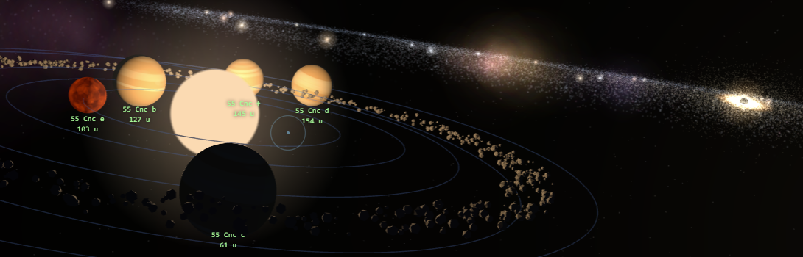

在《星际开拓计划》古老的航海日志中，记载着一个关于宇宙终极密码的传说——只要集齐 7 块远古先驱者遗留的信号碎片，就能洞悉万物的本源。
作为星际财团的宇宙探索实习生，你被任命登上探索船，深入浩瀚星海。你的使命是孤独而凶险的：
这是一场与死神共舞的拉力赛，但每成功收集到一块碎片，宇宙的无上神迹便会瞬间降临：飞船的船体与燃料将奇迹般完全恢复，雷达的信号可发现距离也会变得更远，开启更深邃的黑暗。
当 7 块碎片重新合拼，历史的终章将拉开序幕：你将驾驭终极雷达，强行穿越那片足以撕碎一切的恐怖引力潮汐区，跨越群星的尽头抵达银河中心，去扫描那颗吞噬时间与一切谜底的神秘奇点！
信号解码完成。奇点深处传来的不是回声，而是一段被折叠了无数年的讯息：
「欢迎你，远行者。我们没有消失，只是把自己写进了光里。七块碎片从来不是钥匙，而是种子——每一块，都记录着一颗行星上生命诞生的方式。万物的本源，就是生命本身。当你找到下一颗会呼吸的行星，请把种子带去那里。」
第二季即将开启 · 敬请期待
货舱深处，一个小小的培育舱亮起了微光——它还在休眠，等待被唤醒。
获得称号：✦ 银心探索者
「继续探索」：飞船停在奇点外的安全位置，银河仍然向你开放。「结束游戏」：回到开始界面。
飞船越过了不可回头点，在事件视界之内消失。没有回声，只有无尽的黑暗。
J 或 Esc 关闭
K 或 Esc 关闭 · 点击卡片查看大图
信用点：
U 或 Esc 关闭 · 升级材料从货舱取用：按 I 打开货舱，可出售物品来腾出空间
| 鼠标 | 转向（点击画面锁定鼠标，Esc 释放） · 方向键也可转向 |
| W A S D | 前进 / 左移 / 后退 / 右移 · Z 上升 · C 下降 · Q E 滚转 |
| Shift | 推进加速（消耗能量） |
| Tab / G | 切换目标恒星 / 启动或取消曲速（消耗燃料） |
| 鼠标左键 / F | 瞄准行星并按住扫描（银心的奇点也要这样扫描，条件满足时才能完成） |
| 鼠标右键 / V | 范围扫描（升级扫描仪后）：把准星外圈里的几颗行星一起扫 |
| R | 对选中的目标恒星做远程探测（消耗燃料） |
| M · J · U · K · I · L · H | 星图 · 日志 · 升级 · 行星收藏 · 货舱 · 知识库 · 帮助 |
| P | 拍摄当前星系的全景图（收藏夹的「星系全景」标签里查看） |
| ← → | 在放大的卡片里查看前一张 / 后一张 |
| Enter / Space | 关闭弹窗、教学中的“继续” |
| B | 开关辉光效果 |
| T | 显示 / 隐藏行星轨道线 |
主线 · 银心信号：银河各处散落着 7 块先驱者留下的信号碎片，每一块都会指向下一块的位置（左上角和星图里的 ★ 就是下一个目标）。集齐它们，抵达银河中心，扫描那颗奇点。每收集一块，船体和燃料会完全恢复，信号发现距离也会变远。
扫描与采样：第一次扫描一颗行星，得到信用点和燃料（气态巨行星补 25，其余 10），并收藏一张卡片（K）。同时自动采集这颗行星的资源放进货舱，每颗只采一次，还会获得经验。把一个星系的行星全部扫完，会自动打开收藏。
星系全景图：按 P 可以随时拍下当前星系的全景图：已扫描的行星画成实心，没扫描的只画轨道；右上角写着主恒星的类型、温度（真实恒星还有半径、质量和距离）以及耀斑和高温区的范围，不需要再扫描恒星。扫完一个星系的全部行星时会自动拍一张。收藏夹的「星系全景」标签里可以查看，最新的在最上面，也可以按名字排；重拍会更新旧图。
范围扫描：升级扫描仪后，准星外会多出一圈虚线圈，每升一级圈变大一点。按住 鼠标右键或 V，圈内、并且在扫描距离内的行星会一起被扫描；按 F 或鼠标左键仍然只扫准星对准的那一颗，想只要其中一颗就用它。每颗各算各的：各自的信用点、经验、采样（受货舱限制）和收藏卡片；弹出的是几张小卡片，点一张可以放大。已经扫描过的行星，以及主线任务要找的那颗行星，不参与范围扫描。升级扫描仪需要的晶体比其他升级多（2、2、3、3、5 个），晶体很稀有，要往外围的星系去找。
军衔与经验：首次扫描行星 +8～25（特别的类别最多），完成星系 +40（再加每颗行星 +5），拍摄星系全景 +10（每个星系第一次），拾取信标 +8，收集碎片 +100，第一次解锁知识库条目 +15。经验够了会晋升，晋升的要求在通知里会写明。
知识库：按 L 打开。第一次遇到的恒星类型、行星类别、双星三星、小行星带、耀斑、真实星系等，都会收进知识库，没遇到过的不会显示；扫描银心奇点后还会解锁黑洞的介绍和「生命的种子」。
知识测验：经验超过 900 / 1500 / 3000 后，每完成一个星系（等行星卡飞走、全景图和晋升都看完之后），会邀请你答一次测验：5 题，每题限时 20 秒，四选一，题目是从你已经解锁的知识库条目里随机抽的真实天文知识。三档每题分别加 20 / 30 / 50 经验，答对立刻加。可以选「开始答题」「先去知识库复习」或「跳过」，之后随时能在知识库顶部的「知识测验」里补答。只要按了「开始」，这一档的机会就用掉了（答对的已加经验，中途放弃的题不算）；之后再答都是练习，不加经验。答题开始后不能打开知识库，按 1～4（或 A～D）选答案，Enter 下一题。
货舱与资源：在货舱（I）里使用或出售。氢气 +15、甲烷冰 +25、氦-3 +40 燃料；金属矿修补船体 +20、硅酸盐 +10；其余材料可出售换取信用点，或留作升级。货舱满了就采不了新样本。
资源从哪里来：岩石行星的资源看环境：高温的多金属矿和硅酸盐，低温的多水冰；熔岩行星是金属矿，海洋世界是水冰。稀土来自有岩浆和火山活动的行星（炽热的、温暖的，以及宜居行星里少量），晶体只出现在超级地球等高压的大型岩石行星上，非常稀少，离家园近的星系里很难找到，需要往更远的星系去找，氦-3来自气态巨行星。想升级引擎就去找炽热或宜居的行星，升级扫描仪就去找大型岩石行星。
升级：每次升级除了信用点，还要消耗一种材料：引擎·稀土，燃料舱·水冰，扫描仪·晶体，推进器·氦-3，货舱·金属矿，等级越高需要越多。升级页面会显示当前材料是否够。
星系类型：恒星系有单星、双星和三星。多星系统里的行星要在离恒星足够远的稳定轨道上；第一次进入多星系统、遇到某类恒星，或第一次扫描某一类行星（岩石、气态、冰巨、热木星、熔岩、海洋等）时，会弹出介绍。
真实星系：银河里有若干真实存在的恒星系统（比邻星、TRAPPIST-1 等），名字和行星数据来自天文观测，只包含已经发现的行星。卡片和日志里用 实测（来自天文观测）、推测（由观测值估算）、生成（游戏自己设定的）标出哪些资料是真的；候选行星会标「候选行星」。每局还会随机启用几类特殊现象，例如红矮星、热木星、海洋世界、环双星行星。
星图：青色是已到访，紫色是已探测，空心灰色是未知。选中恒星后按 R 远程探测，可以提前看到行星数、生命迹象、可获得的信用点和信标。
小贴士：靠近恒星可采集燃料，但离得太近会被高温灼伤，还要留意耀斑；气态巨行星的扫描补充燃料最多；燃料不够就先别跳远；多星系统里有伴星，留意标签。
信号信标：星系里散布着信标，强度用 ▮ 表示（1～3 格），越强越远就能发现，奖励也越多。走近到一定距离才会识别出类型，扫描仪升级可以扩大发现和识别距离。
补给：信用点 + 一些材料。求救：信用点 + 燃料。遗迹：较多信用点 + 稀有材料。干扰：是陷阱，会消耗燃料和船体，识别出来就别靠近。
耀斑：在恒星 5 倍半径以内有时会收到预警，4 秒后爆发。爆发时若仍在范围内，船体受损（越近越重）、能量清空、损失一点燃料；预警时屏幕边缘会变红，扫描恒星也会被打断，快远离恒星。红矮星的耀斑特别频繁。
恒星高温区：离恒星约 2.6 倍半径以内是高温区，船体会持续熔毁（每秒 5～15 点，越近越快），屏幕会变红，立即远离。实习生训练期间没有这些危险。
小行星带：行星带里的速度要低于 12 u/s，否则会不断被撞。
撞击：高速撞上行星或恒星会受损。船体低于 25 时，最高速度会下降 40%。
银心奇点：奇点附近有引力潮汐，会把飞船拉向中心，并让船体持续受损（越近越快）。必须靠近到 90 u 内才能扫描它，扫描要持续约 12 秒（升级扫描仪可缩短），期间引力会不断把你往里拖——要一边扫描一边用推进顶住（S 后退、Shift 加速），别被拖过不可回头点。扫描中途偏离或退出范围，进度会慢慢回落。离奇点 40 u 以内是「不可回头点」：越过就无法脱离，飞船会被拖进事件视界，游戏结束（知识库、军衔、信用点保留，收藏、货舱和飞船升级归零）。接近时屏幕上会显示距离读数并发出警报。潮汐区里引力会拖慢移动，越靠近奇点，后退越吃力。
船体失效：船体降到 0，应急信标会把你送回家园恒星，货舱物资减半，信用点 −10%，船体恢复一半。船体低于 30% 时，屏幕边缘会持续泛红。
越深越危险：每收集一块信号碎片，危险事件的强度会提高约 12%。
H 或 Esc 关闭
容量： · 信用点：
I 或 Esc 关闭 · 资源可加注燃料、修补船体或出售